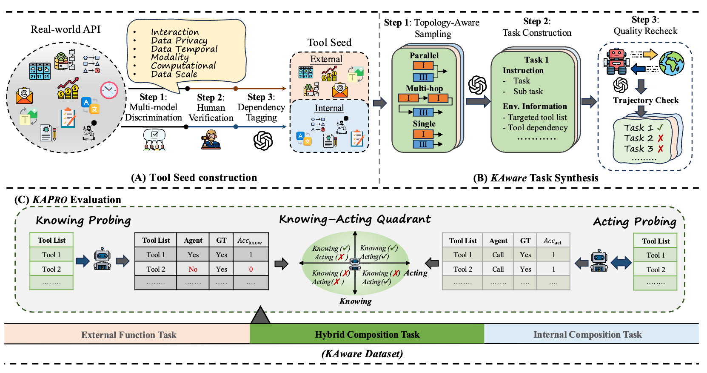
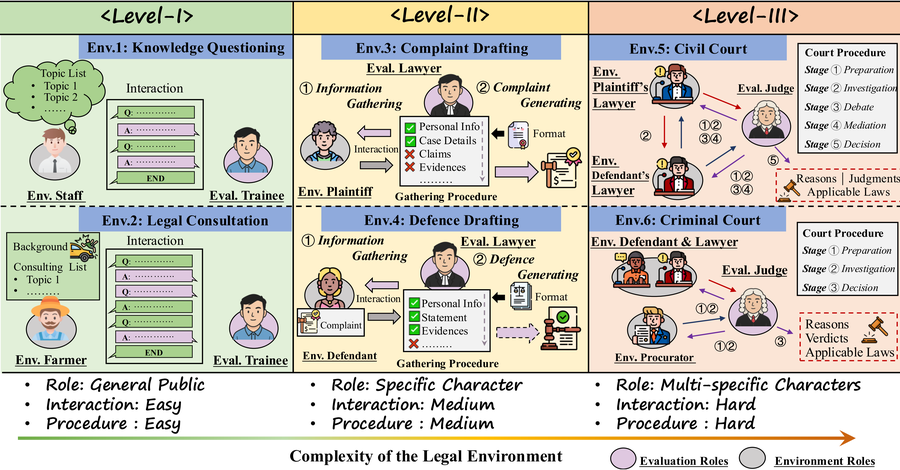
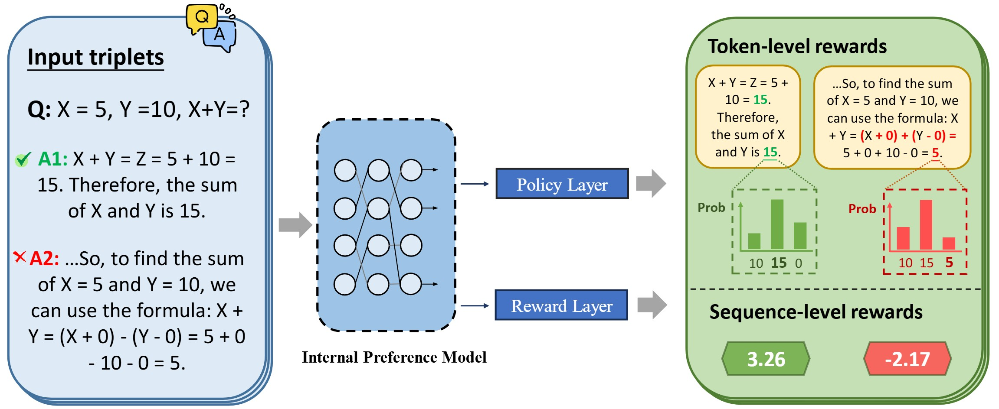
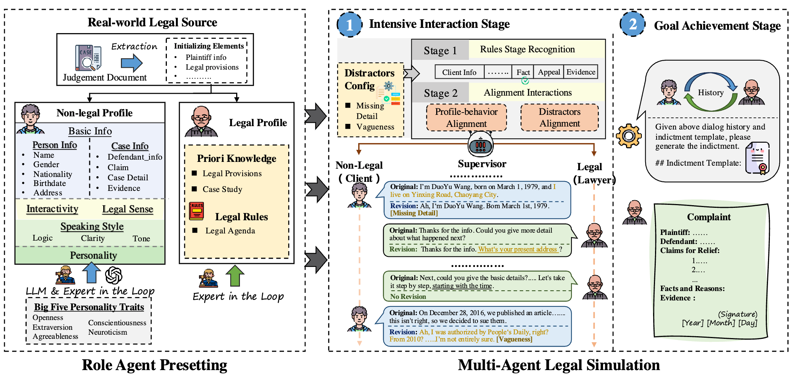
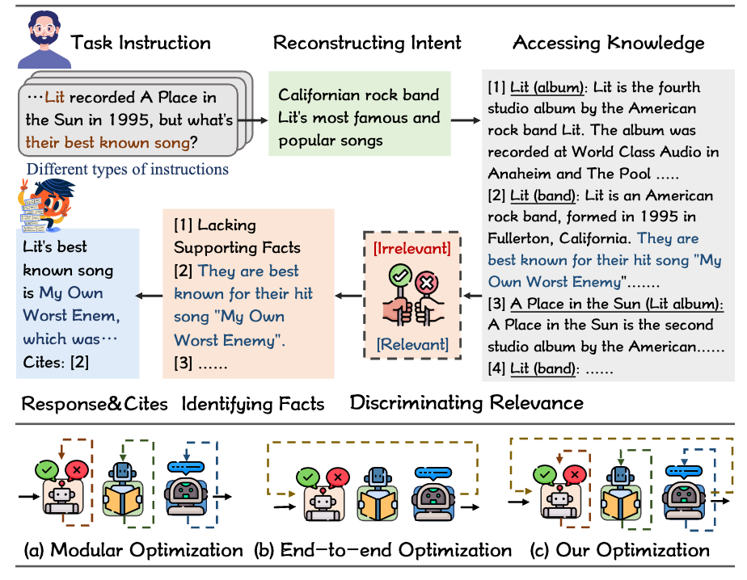
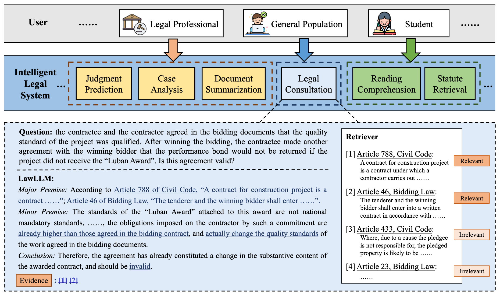
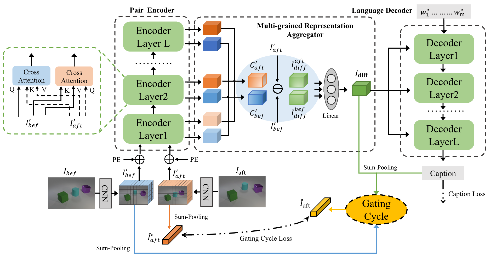
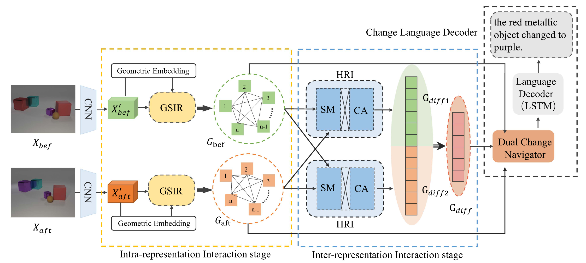

Research
My work spans Natural Language Processing and Multi-modal Learning. Before LLMs, I focused on visual-language captioning (i.e., Change Captioning). Now, I am dedicated to advancing agentic intelligence, with a particular focus on:
- 💻 Autonomous Agents: internalization–externalization in Agent Learning, including world model RL, capability self-awareness, tool-augmented reasoning, environment-agent evolving.
- 🌎 Social Modeling: Exploring collaboration and reasoning of language models within real-world social structures (e.g., legal systems), including multi-task scheduling, social simulation, and strategic planning, to enable agents that comprehend social norms and support trustworthy human-AI cooperation.
|
News
- 2026.04 A paper is accepted by ACL 2026 Main.
- 2025.05 A paper is accepted by ACL 2025 Main.
- 2025.01 A paper is accepted by NAACL 2025.
- 2024.12 A paper is accepted by AAAI 2025 (Oral, Top 4.6%).
- 2024.08 A paper is accepted by NLPCC 2024.
- 2024.07 A paper is accepted by VIS 2024 & IEEE TVCG.
- 2024.04 A paper is accepted by ACM TOMM.
- 2024.03 A paper is accepted by DASFAA 2024 (Oral).
|
Selected Publications
A full list of publications is here. (* indicates equal contribution.)
|
|

|
From Knowing to Acting: Benchmarking Self-Awareness Capability of LLM Agents
Yifan Li*, Shengbin Yue*, Boyu Feng*, Jinhu Qi, Bo Ke, Zixing Song, Hongru Wang, Zhongyu Wei, Irwin King
Preprint, 2026
Github
|
|

|
Ready Jurist One: Benchmarking Language Agents for Legal Intelligence in Dynamic Environments
Zheng Jia*, Shengbin Yue*, Wei Chen, Siyuan Wang, Yidong Liu, Yun Song, Zhongyu Wei
ACL, 2026 (Main)
Homepage
|
|

|
HAF-RM: A Hybrid Alignment Framework for Reward Model Training
Shujun Liu, Xiaoyu Shen, Yuhang Lai, Siyuan Wang, Shengbin Yue, Zengfeng Huang, Xuanjing Huang, Zhongyu Wei
ACL, 2025 (Main)
Homepage
|
|

|
Multi-Agent Simulator Drives Language Models for Legal Intensive Interaction
Shengbin Yue*, Ting Huang*, Zheng Jia*, Siyuan Wang, Shujun Liu, Yun Song, Xuanjing Huang, Zhongyu Wei
NAACL, 2025 (Findings)
Github
|
|

|
Synergistic Multi-Agent Framework with Trajectory Learning for Knowledge-Intensive Tasks
Shengbin Yue, Siyuan Wang, Wei Chen, Xuanjing Huang, Zhongyu Wei
AAAI, 2025 (Oral, Top 4.6%)
Github
|
|

|
LawLLM: Intelligent Legal System with Legal Reasoning and Verifiable Retrieval
Shengbin Yue*, Shujun Liu*, Yuxuan Zhou*, Chenchen Shen*, Siyuan Wang, Yao Xiao, Bingxuan Li, Yun Song, Xiaoyu Shen, Wei Chen, Xuanjing Huang, Zhongyu Wei
DASFAA, 2024 (Oral)
Github (900+ ⭐ GitHub Stars)
|
|

|
Multi-grained Representation Aggregating Transformer with Gating Cycle for Change Captioning
Shengbin Yue, Yunbin Tu, Liang Li, Shengxiang Gao, Zhengtao Yu
ACM TOMM, 2024
Paper
|
|

|
I3N: Intra- and Inter-Representation Interaction Network for Change Captioning
Shengbin Yue, Yunbin Tu, Liang Li, Ying Yang, Shengxiang Gao, Zhengtao Yu
IEEE TMM, 2023
Github
|
Honors & Awards
- QuantPi Scholarship, Fudan University, 2025
- Tung Scholarship, Fudan University, 2024
- Merit Student, Fudan University, 2024
- Outstanding Student Scholarship, Fudan University, 2023 / 2024 / 2025
- First-class Academic Scholarship, Fudan University, 2023 / 2024 / 2025
- Outstanding Master's Thesis Award, Yunnan Province, 2024
- Merit Student, Yunnan Province, 2023
- Outstanding Graduate, Yunnan Province, 2020
|
Service
Area Chair, Lifelong Agent Workshop @ ICLR 2026
Organizer, Agent Court Arena Track, CAIL 2025
Program Committee & Reviewer
- Conferences: ACL Rolling Review (2024–present), ICLR, AAAI, ACL, EMNLP, NAACL, NLPCC, COLING
- Journals: Transactions of the ACL (TACL), Knowledge-Based Systems, Neurocomputing
Teaching Assistant
- IICS737021-Large Language Model, Fudan University (Fall 2024)
- CS60004-Artificial Intelligence, Fudan University (Spring 2026)
|
Invited Talks
- “Knowledge Retrieval Augmented Legal Large Language Models”, MLNLP 2024 Domain LLM Seminar (2024.08)
- “Benchmarking Language Agents for Legal Intelligence in Dynamic Environments”, THUIR, Tsinghua University (2025.08)
- “Toward Interactive Legal Intelligence: Multi-Agent Simulation for Synthetic Data Generation”, CJAI 2026 (2026.01)
|
|
💥 Where limits end, we begin!
|
|
{kind=link}
{kind=link}
{kind=link}
{kind=link}
{kind=link}
{kind=link}
{kind=link}
{kind=link}
{kind=link}